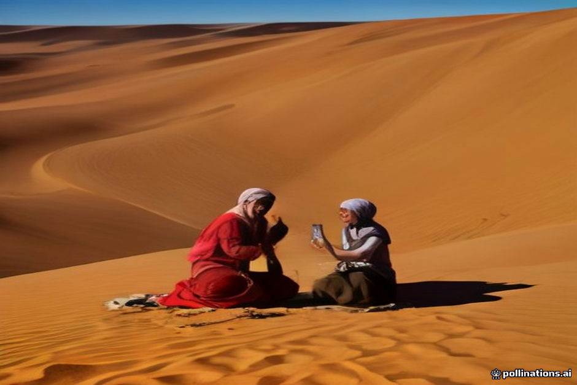

Many travelers ask if they can stay connected while driving across the Atlas Mountains and camping deep in Erg Chebbi. The short answer is yes, but network performance varies wildly depending on your mobile provider, your precise location, and the topography of the dunes.
Morocco's cellular infrastructure in the south is surprisingly robust along paved transit corridors, but the towering sand dunes create natural signal shadows. Here is a realistic breakdown of coverage, Wi-Fi performance, and power availability so you can plan accordingly.
Provider Breakdown: Maroc Telecom vs. Orange and Inwi
If mobile data is essential for your route navigation or peace of mind, choosing the right local SIM card matters significantly once you head south of Errachidia or Ouarzazate.
Maroc Telecom (IAM) offers by far the most reliable signal along rural highways and near the desert edge. Orange works reasonably well in larger towns like Tinghir and Ouarzazate, but drops quickly in deep valleys and sand dunes. Inwi is fine for major cities but unreliable on desert transit routes.
- Maroc Telecom (IAM): Best overall coverage, 4G near Merzouga town, intermittent 3G/4G behind high dunes.
- Orange: Decent in towns, frequent dead zones during mountain passes and inside deep dune camps.
- Inwi: Not recommended for south-eastern Morocco road trips.
Signal Shadows in Erg Chebbi
Merzouga and the edge of the dune field have strong, direct 4G towers. However, Erg Chebbi consists of massive sand structures rising up to 150 meters high. Solid sand barriers block high-frequency cellular signals effectively.
If your desert camp sits directly in a valley behind a major dune ridge, you may experience a complete signal drop. Walking up to the crest of the nearest dune usually restores 3G or 4G reception, as you regain direct line-of-sight to the towers near Merzouga or Hassilabied.
Wi-Fi in Desert Camps: Expectations vs. Reality
Most luxury and high-end desert camps advertise Wi-Fi in common dining areas. In reality, camp Wi-Fi is almost always powered by a local 4G SIM router sitting on a high pole, rather than a fixed fiber line.
During peak evening hours—when thirty guests return from camel treks and attempt to upload photos simultaneously—these 4G routers slow down noticeably. Expect basic text messaging to go through, but do not rely on camp Wi-Fi for video calls, large file transfers, or cloud backups.
Charging Electronics and Off-Grid Power
Standard and luxury camps operate on solar battery banks that power tent lighting through the night. In-tent wall outlets may only function during generator hours or late afternoon solar peaks, and high-draw appliances like hairdryers are strictly prohibited.
We recommend bringing a fully charged 10,000mAh to 20,000mAh power bank to charge your phone and camera gear inside your tent without relying on camp outlets. Check our packing checklist for full details on managing gear off-grid.
| Location / Route | Maroc Telecom (IAM) | Orange | Camp Wi-Fi Quality |
|---|---|---|---|
| Atlas Mountain Passes (Tizi n'Tichka) | 4G / 3G intermittent | 3G / Dead zones | N/A |
| Dades & Todra Valleys | 4G solid | 4G / 3G in towns | Basic in hotels |
| Merzouga Village Edge | 4G strong | 4G strong | Good (Fixed line/4G) |
| Outer Dune Camps (1-2 km in) | 3G / 4G variable | 3G or No Signal | Slow / Shared 4G |
| Deep Dune Camps (Behind crests) | No Signal to 3G | No Signal | Unreliable / None |

Illustration, not a photograph — for the real thing, you'll have to stand on the ridge yourself.
Quick answers
A few follow-up questions travelers ask about this.
Can I buy a local SIM card at the airport?
Yes. Both Marrakesh (RAK) and Casablanca (CMN) airports have official kiosks for Maroc Telecom and Orange offering free SIM cards with prepaid data top-ups. Bring your passport for registration.
Will my home international roaming plan work in Erg Chebbi?
International roaming connects to local towers (usually Maroc Telecom or Orange). However, foreign roaming speed caps and high latency often make a local SIM card far faster and more cost-effective.
Can I work remotely or host Zoom calls from a desert camp?
We strongly advise against scheduling crucial work calls or remote client meetings from the dunes. High latency and bandwidth fluctuations make real-time video conferencing highly unreliable.
Planning your own route?
Tell us your dates and what matters to you — we'll answer with a straight recommendation, not a brochure.
Send an inquiry See the itineraries